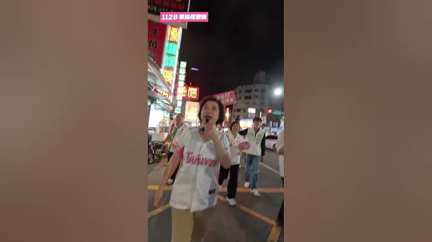

何欣純a-chun.tw
青年圓夢、政府當後盾！何欣純推青年局、AI 研習所助就業創業 台中市長候選人、立法委員何欣純今（15） […] 〈 青年圓夢、政府當後盾！何欣純推青年局、AI 研習所助就業創業 〉這篇文章最早發佈於《 何欣純官方網站｜2026 台中市長候選人 》。
Accounts
| 平台 | 帳號 | 已收錄貼文 | 最後更新 |
|---|---|---|---|
| 官網 | https://a-chun.tw/ | 40 | 2026-09-15 13:00 |
| https://www.facebook.com/94achun/ | 121 | 2026-09-15 12:00 | |
| https://www.instagram.com/a_chun1973/ | 85 | 2026-09-14 22:50 | |
| Threads | https://www.threads.com/@a_chun1973 | 141 | 2026-09-15 17:12 |
| YouTube | https://www.youtube.com/channel/UCFcDN6t7tJ7qObwtyBQHdRg | 147 | 2026-09-15 18:00 |
| LINE 官方帳號 | https://page.line.me/beu1231o | 0 | — |
Timeline
顯示 534 / 534 則
青年圓夢、政府當後盾！何欣純推青年局、AI 研習所助就業創業 台中市長候選人、立法委員何欣純今（15） […] 〈 青年圓夢、政府當後盾！何欣純推青年局、AI 研習所助就業創業 〉這篇文章最早發佈於《 何欣純官方網站｜2026 台中市長候選人 》。

#潭子 的朋友看過來！ 下周六(9/26) #九天民俗技藝團 要來潭子演出啦🥁 歡迎大小朋友一起來潭子，看九天精彩演出、玩遊戲、聽歌曲，還有digi@反詐騙宣導，寓教於樂，讓孩子玩得開心、大人也收穫滿滿！ ▪️活動時間：2026年9月26日（六） 17:30 - 20:00 ▪️活動地點：潭子亭觀音媽廟（潭子區復興路二段89號） 活動免費入場，我們9/26潭子見！一起留下難忘的開心回憶🫶 #親子童樂列車

台中要改變，就交給何欣純！ 謝謝鄭麗君副院長的推薦，我會信守政見承諾，照顧每位市民，大力推動無人機產業，讓台中再次起飛💪 #心存大台中 #市長換欣_台中創新

治安、公安、交通安全，透過智慧AI化大數據盤點，協助台中市民生活便利順暢又安全，是何欣純要全力推動的。 感謝矢板先生的邀訪喔！

忠孝路夜市的好朋友們 阿純收到了你們的❤️
@a_chun1973:@william_chingte 賴清德總統誠摯推薦：台中市長最好的人選，就是何欣純！ 謝謝賴總統的肯定與信任❤️ 我會扛起責任、全力以赴，和中央攜手合作，一起拚建設、拚發展，讓台中更好！

@a_chun1973:台中市民普遍感覺，這幾年來的台中，背離了原有的城市價值。 今天來到霧峰，大家想到的是廚餘；來到大里，想到的是垃圾山，表示這些年來城市該被解決的問題，都沒有被解決，屯區這幾年的發展停滯，看起來被邊緣化。 我帶著滿心祝福來參加 #霧峰聯合行政中心 落成啟用典禮，但我也想起 #大里聯合行政中心，至今仍是一片空地，八年來沒有任何動靜，屯區要進步，建設的腳步不該停滯。 我心中的城市價值，就是每位市民，無論台中的山、海、屯、市，都值得擁有好的生活環境、值得優質的行政服務水準。 區域的均衡發展，就是台中的城市價值，何欣純要用「行動、溫度、創新」均衡台中的區域發展，恢復台中這座城市的價值與榮光！

台中海線的風，正在吹向整個台中！ 謝謝大家給予何欣純無比信心，逗陣拚、一起贏！！

現在台中海線，對台中滿滿滿滿的期待！ 等下我就要上台演說，向台中市民報告何欣純的市政願景，直播連結在下面，何欣純邀請您一起加入觀賞分享！！

台中海線的陽光好美、好燦爛，此時還起風了！！ 椅子排列整齊，恭候市民鄉親大駕光臨，給予何欣純最大的鼓勵與支持！！ #何欣純海線競選總部 今天下午就要成立，歡迎所有市民鄉親好朋友 #欣潮 #追欣族 #台中純派 一起參加，全力相挺何欣純！💪💪 📌日期｜9/13（日）今天下午3：30 📌地點｜清水龍天宮旁（台中市清水區西社里鎮新路21號）

何欣純喊出「3個第一 1個大」台中要大升級💪
@a_chun1973:@pumashen 嫌中南部食物太甜，大家已經戰兩天了。 我沒有說話，是因為我認為台北的沈伯洋對食物這件事情不是很懂。 甜的是南部。 我們台中就是剛剛好的美味、有鹹有甜，不過度張揚與凸顯，講求平衡！ 超過百間欣好店家推薦給大家！ 有吃、有喝、有生鮮也有文具，美味和有趣的都在這。 https://a-chun.tw/goodstore

@a_chun1973:治安、公安、交通安全，透過智慧AI化大數據盤點，協助台中市民生活便利順暢又安全，是何欣純要全力推動的。 感謝矢板先生的邀訪喔！

治安、公安、交通安全，透過智慧AI化大數據盤點，協助台中市民生活便利順暢又安全，是何欣純要全力推動的。 感謝矢板先生的邀訪喔！

鄭麗君力挺何欣純 台中等太久了！需要升級轉型💪
@a_chun1973:這個週末，我的海線競選總部正式成立🌊 美琴原本也想來和台中的好朋友見面，但臨時有出訪行程無法到場，還是特別錄了一段影片，送上滿滿的祝福與鼓勵❤️ 人雖然不在台中，心意一樣沒有缺席！台灣需要副總統外出拚搏，台中讓我來努力～ 謝謝副總統 @bikhimhsiao ，也謝謝每一位一路相挺的台中夥伴！
何欣純海線競總成立 推「4321 海線大進擊」拚建設 台中市長候選人、立法委員何欣純今（13） […] 〈 何欣純海線競總成立 推「4321 海線大進擊」拚建設 〉這篇文章最早發佈於《 何欣純官方網站｜2026 台中市長候選人 》。

台中海線的風，就要吹向整個台中！ 謝謝大家給予何欣純無比信心，逗陣拚、一起贏！！

@a_chun1973:🔥 競選總部正式成立！台中隊，出發！ 謝謝賴清德總統、鄭麗君副院長、蔡其昌主委，以及所有台中隊夥伴到場相挺，更謝謝現場超過5000位鄉親給我滿滿力量！❤️ 選戰到數計時中，接下來繼續全力向前拚： 拚交通效率第一 拚產業升級第一 拚全齡照顧第一 再拼一座國際大機場✈️

@a_chun1973:台中海線的陽光好美、好燦爛，此時還起風了！！ 椅子排列整齊，恭候市民鄉親大駕光臨，給予何欣純最大的鼓勵與支持！！ 何欣純海線競選總部 今天下午就要成立，歡迎所有市民鄉親好朋友、欣潮、追欣族、台中純派 一起參加！全力相挺何欣純💪 📌日期｜9/13（日）今天下午3：30 📌地點｜清水龍天宮旁（台中市清水區西社里鎮新路21號）

@a_chun1973:台中要改變，就交給何欣純！ 謝謝鄭麗君副院長的推薦與鼓勵 我會說到做到、兌現每一項政見，照顧每一位台中市民，也全力推動無人機與智慧產業發展。 讓產業升級、城市進步，讓台中再次起飛🚀

第一der海線 海線媳婦何欣純喊話！

何欣純專訪-治安、公安、交通安全，透過智慧AI化大數據盤點，協助台中市民生活便利順暢又安全，是何欣純要全力推動的。感謝矢板先生的邀訪喔！
霧峰行政中心落成、大里仍一片空地 何欣純：準市區格局推屯區大進擊 立法委員何欣純今（14）日出席霧峰區聯合 […] 〈 霧峰行政中心落成、大里仍一片空地 何欣純：準市區格局推屯區大進擊 〉這篇文章最早發佈於《 何欣純官方網站｜2026 台中市長候選人 》。
賴清德總統誠摯推薦：台中市長最好的人選，就是何欣純！💪 謝謝賴總統的肯定與信任❤️ 我會扛起責任、全力以赴，和中央攜手合作，一起拚建設、拚發展，讓台中更好！

阿純開箱員工餐！有菜 有肉 還有魚🐟

@a_chun1973:台中海線的風，正吹向整個台中！ 感謝大家給予何欣純無比信心，逗陣拚、一起贏！！

@a_chun1973:現在台中海線，對台中滿滿滿滿的期待！ 等下我就要上台演說，向台中市民報告何欣純的市政願景，直播連結在下面，何欣純邀請您一起加入觀賞分享！！

🔥 競選總部正式成立！台中隊，出發！ 謝謝賴清德總統、鄭麗君副院長、蔡其昌主委，以及所有台中隊夥伴到場相挺，更謝謝現場超過5000位鄉親給我滿滿力量❤️ 選戰倒數計時中，為了更好的台中 作伙拚、作伙贏💪

台中海線的陽光好美、好燦爛，此時還起風了！！ 椅子排列整齊，恭候市民鄉親大駕光臨，給予何欣純最大的鼓勵與支持！！ #何欣純海線競選總部 今天下午就要成立，歡迎所有市民鄉親好朋友 #欣潮 #追欣族 #台中純派 一起參加，全力相挺何欣純！💪💪 📌日期：9/13（日）今天下午3：30 📌地點：清水龍天宮旁（台中市清水區西社里鎮新路21號）